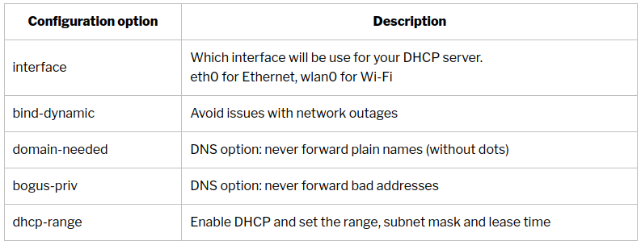

Journal de Manip
Journal de Manip
Raspberry Pi as a router¶
Objectif¶
L’objectif est de transformer le Raspberry Pi en router. La carte wifi doit se connecter à un point d’accès mobile tel q’un téléphone ou un router 4G / 5G. Le trafic est ensuite routé vers la carte Ethernet.
Un serveur DHCP est également configuré sur la carte Ethernet.
Schéma¶
{kind=link}
Configuration des points d’accès wifi¶
- Liens_Web:
Avertissement
Attention, il est important de respecter la casse du SSID (majuscule / minuscule). De plus, un SSID ne peux pas contenir d’espace.
L’ajout de SSID peut s’effectuer de 2 façons diférentes.
Configuration à l’aide de l’outil « Raspi-config »¶
{kind=link}
{kind=link}
{kind=link}
{kind=link}
Configuration manuelle¶
Il est possible de configurer les point d’accès directement depuis le fichier de configuration.
- Editer le fichier « wpa_supplcant »
- Ajouter les informations Wifi (SSID + Password) à la fin du fichier
Routeur¶
- Liens_Web:
Configuration d’une IP statique sur eth0¶
Editer le fichier dhcpcd.conf
sudo vim /etc/dhcpcd.confDéfinir l’adresse IP fixe et les DNS
Ici, il n’est pas nécessaire de renseigner la passerelle car puisqu’il n’y en à qu’une (wlan0), elle est utilisée par défault.
La définission des DNS est facultative. Par défault, les DNS sont fournis par l’ISP.
interface eth0 static ip_address=192.168.1.254/24 static domain_name_servers=1.1.1.1 9.9.9.9Redémarrer le Pi
sudo rebootEditer le fichier de configuration du Kernel
sudo /etc/sysctl.confActiver l’option router dans le Kernel
# Uncomment the next line to enable packet forwarding for IPv4 net.ipv4.ip_forward=1Installation d’Iptable
sudo apt-get update sudo apt-get install iptables-persistentAjout du fichier « rules.v4 » au group de l’utilisateur
sudo chgrp pi /etc/iptables/rules.v* sudo chmod 664 /etc/iptables/rules.v*Création d’une table persistante
sudo iptables -t nat -A POSTROUTING -o wlan0 -j MASQUERADE sudo iptables-save >/etc/iptables/rules.v4
Serveur DHCP¶
- Liens_Web:
Installation de dnsmasq
sudo apt install dnsmasqEditer le fichier de configuration de dnsmasq
sudo vim dnsmasq.confAjouter la configuration du DHCP en fin de fichier
Avertissement
Vérifier que les options et exemples déjà renseignés ne sont pas en conflit avec les informations ajoutées.
# TP : 220814 # Configuration manuelle du DHCP interface=eth0 bind-dynamic domain-needed bogus-priv dhcp-range=192.168.1.50,192.168.1.80,255.255.255.0,12hRedémarrer le service dnsmasq
sudo service dnsmasq restart
{kind=link}
Webmin¶
- Liens_Web:
Editer le fichier source.list
sudo vim /etc/apt/sources.listAjouter le dépôt à la fin du fichier
deb https://download.webmin.com/download/repository sarge contribInstallation de la clef GPG
wget http://www.webmin.com/jcameron-key.asc sudo apt-key add jcameron-key.ascInstallation de webmin
sudo apt update sudo apt install webminAccéder à webmin depuis une page web
https://IP_ADDRESS:10000
Le port part défaut est le TCP 10000
Les identifiants sont les identifiants de l’utilisateurs sur le Pi
Serveur d’impression¶
Ici aucune dificulté. Il suffit de suivre un tuto installation et de configuration de CUPS.
# Pour accéder au serveur d'impression en local depuis un navigateur WEB http://localhost:631 # Pour accéder au serveur d'impression depuis autre poste du réseau http://[IP du serveur d'impression]:631